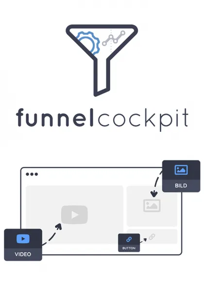
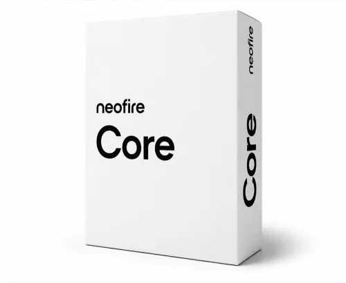

Professionelle WordPress Websites – Verdienen Sie 40 % Provi
Produktprofil · Marktplatz-Daten 2026-10-14 · Verkaufsseiten-Recherche 2026-10-14 · Kategorien: Software, Services
- Professionelle WordPress Websites – Verdienen Sie 40 % Provi ist ein/e Elektronische Dienstleistung in Software und Services, vertrieben über den Digistore24-Marktplatz von Anbieter ClickserviceGmbH, gelistet seit 2026-01-15.
- Listenpreis $1107.61 (single payment) — Checkout, Auslieferung und Rückerstattungen laufen über Digistore24 selbst, nicht über den Anbieter.
- Käuferschutz: keine standardisierte Garantie-Formulierung gefunden — Rückerstattungsbedingungen vor der Zahlung auf der offiziellen Seite prüfen.
Interesse an Professionelle WordPress Websites – Verdienen Sie 40 % Provi? Aktueller Preis, Boni und Garantiebedingungen finden Sie auf der offiziellen Seite des Anbieters:
Offizielle Verkaufsseite ansehen
Affiliate-Link (Werbung) — wir verdienen ggf. eine Provision, ohne Mehrkosten für Sie.

Marktplatz-Daten
| Produkttyp | Elektronische Dienstleistung |
|---|---|
| Preis | $1107.61 (Single payment) |
| Garantie/Rückgabe | Laut Verkaufsseite des Anbieters — vor dem Kauf auf der offiziellen Seite prüfen |
| Anbieter | ClickserviceGmbH (gelistet seit 2026-01-15) |
Marktplatz-Beschreibung des Anbieters
Verdienen Sie 40 % Provision! Werden Sie Affiliate und profitieren Sie von unserem attraktiven 40% Partnerprovisionssatz – eine der höchsten Provisionen auf Digistore24! Produktbeschreibung für Ihre Kunden: Bieten Sie Ihren Kunden eine moderne, professionelle WordPress-Website , die das Unternehmen optimal präsentiert und neue Kunden gewinnt. Die Website ist responsiv, schnell und benutzerfreundlich – perfekt für kleine Unternehmen, Startups und Selbstständige. Wichtige Features: ✅ Individuelles responsives Design ✅ Bis zu 8 Seiten (Start, Über uns, Leistungen, Blog, Kontakt) ✅ Basis-SEO & schnelle Ladezeiten ✅ Kontaktformular & Newsletter-Anbindung ✅ Optional: Social Media & Google Maps Vorteile für Ihre Kunden: 100 % Eigentum – keine monatlichen Gebühren Domain & Hosting im ersten Jahr kostenlos Professionelle Online-Präsenz, die neue Kunden gewinnt Einfach zu pflegen und zu verwalten Warum Sie dieses Produkt bewerben sollten: Hohe Provision: 40% pro Verkauf Ein Produkt, das leicht verkauft wird – hoher Bedarf bei Unternehmern Kein Risiko für Kunden – volle Eigentumsrechte & gratis Hosting Einfach zu erklären und zu promoten Tipps zur Bewerbung: Heben Sie die kostenlose Domain & Hosting hervor Betonen Sie SEO & responsive Design Ideal für Social Media, Blogs, Newsletter oder YouTube
Von der Verkaufsseite des Anbieters
Seitentitel: Professionelle WordPress Website - Digistore24
Abschnitts-Überschriften
- Professionelle WordPress Website
- Professionelle WordPress Website
- Professionelle WordPress Website
Einstiegstext
Sie erhalten eine moderne, professionelle WordPress-Website , die Ihr Unternehmen optimal präsentiert und neue Kunden gewinnt. Responsiv, schnell und benutzerfreundlich.
✔ 100 % Eigentum – keine monatlichen Gebühren ✔ Domain & Hosting im ersten Jahr kostenlos
Sie erhalten eine moderne, professionelle WordPress-Website , die Ihr Unternehmen optimal präsentiert und neue Kunden gewinnt. Responsiv, schnell und benutzerfreundlich.
✔ 100 % Eigentum – keine monatlichen Gebühren ✔ Domain & Hosting im ersten Jahr kostenlos
Preisangaben auf der Seite: $10
Recherche-Methode: rohes HTML · 334 Wörter · Qualität: medium · recherchiert am 2026-10-14. Vollständige Recherche-Datei (MD) ↗
Wie Produkte dieser Art geliefert werden
Allgemeiner Hinweis zu diesem Produkttyp (keine anbieterspezifische Anleitung): Remote-Dienstleistungen werden elektronisch erbracht — der Anbieter meldet sich nach dem Kauf. Für die genaue Anwendung von Professionelle WordPress Websites – Verdienen Sie 40 % Provi sind die offizielle Verkaufsseite und die enthaltenen Materialien maßgeblich.
Gut zu wissen
- Hoher Preis: $1107.61 ist eine erhebliche Ausgabe — prüfen Sie, ob es einen Zahlungsplan gibt, und vergleichen Sie zuerst die günstigeren Alternativen der Kategorie.
- Keine Garantie-Formulierung in unserer Recherche gefunden — bestätigen Sie das Rückgabefenster auf der offiziellen Seite, bevor Sie kaufen.
Was ist Professionelle WordPress Websites – Verdienen Sie 40 % Provi?
Professionelle WordPress Websites – Verdienen Sie 40 % Provi ist ein/e elektronische dienstleistung in der Kategorie Software des Digistore24-Marktplatzes, veröffentlicht von Anbieter ClickserviceGmbH und im Verkauf seit 2026-01-15. Der Anbieter beschreibt es so: "Verdienen Sie 40 % Provision! Werden Sie Affiliate und profitieren Sie von unserem attraktiven 40% Partnerprovisionssatz – eine der höchsten Provisionen auf Digistore24! Produktbeschreibung für Ihre Kunden: Bieten Sie Ihren Kunden eine moderne, professionelle " (Marktplatz-Beschreibung des Anbieters, leicht gekürzt).
Professionelle WordPress Websites – Verdienen Sie 40 % Provi Preis: was Sie zahlen
Der Marktplatz listet Professionelle WordPress Websites – Verdienen Sie 40 % Provi zum $1107.61 Preis (single payment). Digistore24 fügt im Checkout die gesetzliche Steuer Ihres Landes hinzu — dort sehen Sie den Endbetrag vor der Zahlung. Die Verkaufsseite selbst nennt: $10 (Anbieteraussagen — verbindlich ist der Checkout-Betrag). Eine separate Plattformgebühr gibt es nicht; Anbieter können eigene Upsells nach dem Checkout anbieten.
Professionelle WordPress Websites – Verdienen Sie 40 % Provi Rückerstattung und Geld-zurück-Garantie
Wir haben keine standardisierte Garantie-Formulierung auf der Verkaufsseite gefunden. Rückerstattungen für Digistore24-Käufe laufen über die Plattform: Antrag über den Support-Link in Ihrer Bestell-E-Mail, innerhalb des Garantiezeitfensters, das im Checkout angezeigt wird. Praktischer Rat: Entscheiden Sie innerhalb des Fensters — wenn das Produkt unter den Erwartungen bleibt, erstatten lassen statt irren lassen.
Mechanik im Detail: So funktionieren Digistore24-Rückerstattungen.
Für wen ist Professionelle WordPress Websites – Verdienen Sie 40 % Provi geeignet?
Basierend auf der Software-Einordnung und der single payment-Abrechnung richtet sich Professionelle WordPress Websites – Verdienen Sie 40 % Provi an Käufer, die software-Lösungen suchen und ein Budget für einen Premium-Kauf eingeplant haben. Der ehrliche Test ist nicht die Kategorie, sondern Ihre eigene Situation: Werden Sie es realistisch innerhalb des Garantiefensters nutzen? Wenn ja, ist der Preis eine Investition; wenn nein, ist er Ballast — unabhängig von der Qualität.
Ist Professionelle WordPress Websites – Verdienen Sie 40 % Provi seriös? Was Sie vor dem Kauf prüfen
Wir bewerten keine Seriosität — das kann niemand, ohne das Produkt zu nutzen. Prüfbare Punkte, alle auf dieser Seite: die Marktplatz-Historie des Anbieters (im Verkauf seit 2026-01-15), die wörtlichen Verkaufsseiten-Auszüge unten (gekennzeichnet als Anbieteraussagen — deren Werbung, nicht unsere Empfehlung), die Garantiebedingungen im Checkout und die Auslieferungsart. Vorsichtsignale bei jedem Angebot: Countdown-Dringlichkeit gepaart mit vagen Rückerstattungsbedingungen, Testimonials ohne Datum und Anbieterseiten, die den Preis bis zum Checkout verstecken.
Wie kommen Sie nach dem Kauf an Professionelle WordPress Websites – Verdienen Sie 40 % Provi?
Der Checkout läuft über Digistore24. Nach der Zahlung: Remote-Dienstleistungen werden elektronisch erbracht — der Anbieter meldet sich nach dem Kauf. Bewahren Sie die Bestell-E-Mail auf — sie ist Ihr Schlüssel zum/d zur elektronische dienstleistung, zu Rückerstattungsanträgen und zum Digistore24-Käufersupport.
Professionelle WordPress Websites – Verdienen Sie 40 % Provi Erfahrungen: so recherchieren Sie richtig
Die meisten „Erfahrungsberichte" zu Marktplatz-Produkten sind Affiliate-Inhalte — einschließlich Seiten wie dieser, die an Käufen mitverdienen. Behandeln Sie jeden Bericht (auch unseren) als Ausgangspunkt und prüfen Sie gegen Primärquellen: die Verkaufsseite des Anbieters, die Digistore24-Rückerstattungsrichtlinie und — für software — unabhängige Communities außerhalb des Affiliate-Ökosystems. Auf dieser Seite sind die Verkaufsseiten-Auszüge unten wörtlich zitiert, damit Sie die Aussagen des Anbieters bewerten können, ohne wegzuklicken.
Wie Sie Professionelle WordPress Websites – Verdienen Sie 40 % Provi sicher kaufen
- Öffnen Sie die offizielle Verkaufsseite und lesen Sie das vollständige Angebot.
- Bestätigen Sie Endpreis und Garantiezeitfenster auf der Digistore24-Kassenseite — sie ist bindend, kein Vergleichsportal.
- Zahlen Sie innerhalb des Digistore24-Checkouts (niemals per Überweisung oder Off-Platform-Links).
- Speichern Sie die Bestellbestätigung; notieren Sie die Rückerstattungsfrist im Kalender.
- Prüfen Sie zügig. Der Digistore24-Käufersupport hilft, wenn der Anbieter nicht reagiert.
Vollständiges Recherche-Archiv für dieses Produkt (Markdown: kompletter Marktplatz-Datensatz + wörtliche Verkaufsseiten-Auszüge): Professionelle WordPress Websites – Verdienen Sie 40 % Provi — vollständiges Datenarchiv (Markdown-Datei: 55340-professionelle-wordpress-websites-verdienen-sie-40-provi.md).
- Listenpreis & Abrechnung — Quelle: offizielle Digistore24-Marktplatz-API, Stand 2026-10-14. Maßgeblich für den aktuellen Preis ist immer die Kassenseite.
- Verkaufsseiten-Zitate — Quelle: https://www.checkout-ds24.com/product/661606, abgerufen 2026-10-14 (Methode: rohes HTML). Verify: offizielle Seite öffnen.
- Garantie / Rückgabe — vom Anbieter festgelegt; vor dem Kauf auf der Verkaufsseite bestätigen.
- Nicht von uns geprüft: Produktqualität, Ergebnisse, Testimonials — kein Praxistest für dieses Listing durchgeführt.
Häufige Fragen zu Professionelle WordPress Websites – Verdienen Sie 40 % Provi
Antworten aus dem Marktplatz-Snapshot (2026-10-14) und der Verkaufsseiten-Recherche (2026-10-14); Anbieteraussagen sind inline gekennzeichnet.
Was ist Professionelle WordPress Websites – Verdienen Sie 40 % Provi?
Professionelle WordPress Websites – Verdienen Sie 40 % Provi ist ein Angebot des Typs „Elektronische Dienstleistung" im Digistore24-Marktplatz, Anbieter: ClickserviceGmbH, gelistet seit 2026-01-15. Eingepflegt unter Software und Dienstleistungen. Digistore24 wickelt Checkout, Lieferung und Rückgaben ab.
Wie viel kostet Professionelle WordPress Websites – Verdienen Sie 40 % Provi?
Der Digistore24-Marktplatz listet es für $1107.61 (single payment). Preise legt der Anbieter fest und können sich ändern — der Marktplatz-Eintrag oben zeigt den Schnappschuss; die offizielle Verkaufsseite zeigt den aktuellen Preis.
Gibt es eine Geld-zurück-Garantie für Professionelle WordPress Websites – Verdienen Sie 40 % Provi?
Unsere Verkaufsseiten-Recherche hat keine explizite Garantie-Formulierung gefunden. Viele Digistore24-Produkte bieten 60 Tage Geld-zurück, aber das legt jeder Anbieter selbst fest — bestätigen Sie es auf der offiziellen Verkaufsseite, bevor Sie kaufen.
Ist Professionelle WordPress Websites – Verdienen Sie 40 % Provi seriös?
Wir bewerten keine Seriosität — wir veröffentlichen überprüfbare Zahlen: Anbieter ClickserviceGmbH (gelistet seit 2026-01-15), mit der vollständigen Verkaufsseiten-Recherche archiviert auf dieser Seite (Anbieteraussagen als solche gekennzeichnet). Lesen Sie unsere 6-Punkte-Bewertungsmethode und entscheiden Sie anhand der Zahlen — oder diskutieren Sie Professionelle WordPress Websites – Verdienen Sie 40 % Provi auf GitHub.
Gibt es Alternativen zu Professionelle WordPress Websites – Verdienen Sie 40 % Provi?
Ja — die nächstähnlichen Angebote derselben Kategorie sind Maya, digitale Assistentin: bis 980 € pro Kunde + monatlich, Zencaptcha - Webseiten vor Bots und Spam schützen, Meisterbot. Details in der Vergleichstabelle oben bzw. auf der Alternativen-Seite mit allen Marktplatz-Zahlen.
Wo kann ich Professionelle WordPress Websites – Verdienen Sie 40 % Provi sicher kaufen?
Nur über die offizielle Verkaufsseite, die auf dieser Seite verlinkt ist (Checkout und Rückgaben laufen über Digistore24). Prüfen Sie dort Preis und Garantie vor der Bestellung. Der Link ist ein Affiliate-Link — der Kauf unterstützt diese Website ohne Mehrkosten für Sie.
Wie erhalte ich Professionelle WordPress Websites – Verdienen Sie 40 % Provi nach der Zahlung?
Der Checkout läuft über Digistore24: Nach der Zahlung erhalten Sie Ihren Zugang oder Download per E-Mail und in Ihrem Digistore24-Kundenkonto. Lieferdetails für diesen Produkttyp: Remote-Dienstleistungen werden elektronisch erbracht — der Anbieter meldet sich nach dem Kauf. Bei Problemen kann der Digistore24-Käufersupport Ihre Bestellung wiederherstellen.
Alle 50 Käuferfragen zu Software — das komplette Kategorie-FAQ.
Professionelle WordPress Websites – Verdienen Sie 40 % Provi auf Reddit diskutieren
In Community-Threads vergleichen echte Käufer Erfahrungen. Wir verlinken Communities, keine einzelnen Posts — Threads verschwinden, Subreddits bleiben:
- r/de_EDV — deutschsprachige Community mit Diskussionen zu software.
- Reddit-Suche nach „Professionelle WordPress Websites – Verdienen Sie 40 % Provi" — Live-Ergebnisse, von uns nicht beeinflusst.
- Top-„Erfahrungs"-Treffer dieses Jahr — selbst nach Aktualität filtern.
Passendes auf Amazon.de
Physische Produkte und Zubehör, die häufig zusammen mit Professionelle WordPress Websites – Verdienen Sie 40 % Provi gekauft werden:
- Software auf Amazon.de — Top-Ergebnisse, Amazon-Ranking.
- Bestseller: Software — live Liste von Amazon, von uns nicht kuratiert.
Werbung: Als Amazon-Partner verdient DigistorePicks DE an qualifizierten Käufen (Partner-tag adminstorede-21). Amazon setzt eigene Preise und Provisionen (niedrige einstellige Prozente — weit unter den 30–75% der Digistore24-Anbieter). Amazon ist ein Convenience-Angebot für Sachprodukte, kein Ersatz für das digitale Produkt oben.
Ähnliche Angebote in Software

Maya: digitale Assistentin für WhatsApp und Telefon Maya beantwortet Kundenanfragen kleiner Betriebe rund um die Uhr auf WhatsApp und im Paket mit Telefon auch

Zencaptcha schützt Webseiten vor Spam und betrügerischen Aktivitäten. Falsche und temporäre E-Mail-Adressen werden erkannt und Bots werden herausgefordert, noch

+++ Willkommen beim Meisterbot-Partnerprogramm! +++ Verdienen Sie über 850 EUR Provision pro Sale mit der ersten schlüsselfertigen KI-Telefonzentrale für den Mi

VoxelPrint Pro ist ein professionelles WordPress- & WooCommerce-Plugin , das deinen Shop in einen vollautomatischen 3D-Druck-Service mit echtem Multicolor-S
Optionen vergleichen? Professionelle WordPress Websites – Verdienen Sie 40 % Provi im Vergleich mit den nächsten Alternativen — Marktplatz-Zahlen direkt nebeneinander.
Wie schneidet Professionelle WordPress Websites – Verdienen Sie 40 % Provi ab? (Marktplatz-Zahlen)
| Produkt | Typ | Preis | Provision | Checkout-CR* | Storno* | Verdienst/Verkauf |
|---|---|---|---|---|---|---|
| Professionelle WordPress Websites – Verdienen Sie 40 % Provi | Elektronische Dienstleistung | $1107.61 | 40 % | — | — | $443.04 |
| Maya, digitale Assistentin: bis 980 € pro Kunde + monatlich | Elektronische Dienstleistung | $5482.12 | 20 % | — | — | $1096.42 |
| Zencaptcha - Webseiten vor Bots und Spam schützen | Mitgliederbereich & Videokurs | $2247.00 | 25 % | — | — | $561.75 |
| Meisterbot | Software | $1786.32 | 30 % | — | — | $535.89 |
| VoxelPrint Pro – 3D-Druck-Shop für WooCommerce | Software | $1208.30 | 30 % | — | — | $362.49 |
Entscheidungsfaktoren für Käufer
- Funktion: Checkout-Konversion und Anbieter-Bilanz vergleichen — beide in der Tabelle oben.
- Passung: Typ und Voraussetzungen (Lieferformat, Vorkenntnisse) in jedem Profil prüfen.
- Wartung: Die Stornoquote ist das Kaufreue-Signal; Nutzungsbedingungen stehen auf den offiziellen Seiten.
- After-Sales: Garantie-Formulierung und Support — vor dem Kauf auf offiziellen Seiten verifizieren.
* Anbieter-seitige Statistiken; abhängig von der Traffic-Qualität, keine Prognose. Vollständiger Kontext: Alternativen-Seite zu Professionelle WordPress Websites – Verdienen Sie 40 % Provi.
Professionelle WordPress Websites – Verdienen Sie 40 % Provi ist auch gelistet in
Dienstleistungen (104 Produkte)
Ähnliche Preislage in Software
Software-as-a-Service Lösung meinOnlineBüro, CRM, Auftragsabwicklung, Rechnungschreiben, Zeiterfassung. Es ist eine Standardlösung die als Monats- oder Jahresab
Das Produkt GUITestStudio ist ein Werkzeug zur Testautomatisierung für Windows-Anwendungen. Du zeichnest Bedienabläufe einfach auf und spielst sie beliebig oft

Die All-In-One Software zur Erstellung von effektiven Salesfunnels - inkl. Conversion-Elementen und vielen innovativen Tools wie z.B.: - PageBuilder - CRM - E-M

neofire Core – das komplette E-Commerce-System im Abo 20 % Provision auf jede Zahlung – auch auf alle Folgezahlungen des Abos. Jeder Kunde, den du vermittelst,
Ähnliche Suchanfragen
Wo Sie es sich ansehen können
Wo Sie es sich ansehen können
Aktuelle Preise, Garantie und Boni finden Sie auf der offiziellen Verkaufsseite:
Offizielle Verkaufsseite ansehen
Das ist ein Affiliate-Link (Werbung) — kaufen Sie darüber, verdienen wir ggf. eine Provision, ohne Mehrkosten für Sie.
Quellen & weiterführende Informationen
- Offizielle Verkaufsseite (aktueller Preis, Garantie, Boni): www.checkout-ds24.com/product/661606 (Affiliate-Link)
- Öffentliche Digistore24-Produktseite: checkout-ds24.com/product/661606
- Vollständige Recherche-Datei (Markdown, versioniert): content/products/55340-professionelle-wordpress-websites-verdienen-sie-40-provi.md
- Affiliate-Supportseite des Anbieters: clickservice.at/kontakt/
- Marktplatz-Kategorie: Software
Wie wir Produkte wie Professionelle WordPress Websites – Verdienen Sie 40 % Provi bewerten
Sechs Prüfungen, ausschließlich mit offiziellen Marktplatz-Zahlen. Die vollständige Bewertungsmethode lesen · unsere Recherche-Standards & Kennzeichnung.
Fragen oder eigene Erfahrungen mit Professionelle WordPress Websites – Verdienen Sie 40 % Provi?
Praxis-Tests veröffentlichen wir erst, nachdem wir ein Produkt selbst gekauft haben — aber Ihre Erfahrung hilft anderen Lesern: Diskussion zu Professionelle WordPress Websites – Verdienen Sie 40 % Provi auf GitHub starten/verfolgen. Falsche Zahl gefunden? Korrektur melden — jede Seite zeigt ihre Datenstände, Korrekturen gelten für die ganze Website.